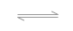

Drawing Molecule¶
The ability to display intuitive image of molecule is one of the most important features of chemoinformatics-related programs. However, drawing graphics on HTML page is more complex than one’s first sense.
Background Introduction¶
In the history of web evolution, there emerges several technologies to draw 2D graphic.
Firstly proprietary VML by
Microsoft Internet Explorer, then SVG
proposed by W3C, at last the Canvas.
Different technologies requires different drawing context, normal
HTML element (like <div>) for VML, <svg> element for SVG and <canvas>
for Canvas. Most modern web browsers supports Canvas well but there still
exists legacy browsers in market. For instance, default web browser before Android 2.1
supports SVG but does not support Canvas; MS IE does not supported SVG and
Canvas until version 9. For 3D drawing in web, the preferred technology is WebGL
but legacy browsers have poor supports on it too. So web developer has to facing different
graphics technologies and different drawing context in different environment.
Instead of calling to those technologies directly, bridge pattern is used in Kekule.js to achieve platform independency as shown in next figure. Concrete drawing work (e.g., drawing line, drawing text) is assigned to to a specified drawing bridge which can be created based on current environment. That approach helps developer to avoid the difference of VML, SVG and Canvas and to concentrate on one set of code runs in different platform.
< Simplified UML diagram of rendering system >¶
To draw a molecule on screen, a special renderer class will be used. However, besides molecule, there often to be many other types of objects in a chemoinformatics application (e.g., text, formula, reaction arrow) and they requires different renderers. So factory method pattern is applied here. Rather than calling a renderer class directly, you should query the renderer manager to return a preferred class for molecule (or other types of object).
After those background introduction, now let us implement those knowledge in code. 1
Drawing by Renderer¶
Before drawing, do not forget to include two additional JavaScript libraries in HTML page. Raphael.js for 2D drawing (unless your target enviroment all supports Canvas) and Three.js for 3D drawing as mention in the Installation part of this tutorial.
<script src="raphael.min.js"></script>
<script src="Three.js"></script>
<script src="kekule.js?module=render"></script>
The following code snippet can be used to draw a molecule. 2 It can be divided into several steps:
Line 2, we check the render type, decide which form, 2D or 3D graphics should be made.
Line 5-7, old content in parent HTML element is cleared. We are preparing to draw inside it later.
Line 10-12, a suitable draw bridge is created.
Line 15-16, a suitable draw context is created inside parent HTML element.
Line 18-23, a renderer class for molecule is found.
Line 24, concrete renderer object is created, bind with molecule and draw bridge.
Line 26-40, prepare options for drawing.
Line 43, at last, draw the molecule to context by renderer.
1 2 3 4 5 6 7 8 9 10 11 12 13 14 15 16 17 18 19 20 21 22 23 24 25 26 27 28 29 30 31 32 33 34 35 36 37 38 39 40 41 42 43 | var renderType = Kekule.Render.RendererType.R2D//R3D // do 2D or 3D drawing
var is3D = (renderType === Kekule.Render.RendererType.R3D);
// parent HTML element, we will draw inside it
var parentElem = document.getElementById('parent');
// clear parent elem
Kekule.DomUtils.clearChildContent(parentElem);
// Get suitable draw bridge for 2D or 3D drawing
var drawBridgeManager = is3D? Kekule.Render.DrawBridge3DMananger:
Kekule.Render.DrawBridge2DMananger;
var drawBridge = drawBridgeManager.getPreferredBridgeInstance();
// then create render context by drawBridge first
var dim = Kekule.HtmlElementUtils.getElemOffsetDimension(parentElem); // get width/height of parent element
var context = drawBridge.createContext(parentElem, dim.width, dim.height); // create context fulfill parent element
// then create suitable renderer to render molecule object
var rendererClass;
if (is3D)
rendererClass = Kekule.Render.get3DRendererClass(mol);
else
rendererClass = Kekule.Render.get2DRendererClass(mol);
var renderer = new rendererClass(mol, drawBridge); // create concrete renderer object and bind it with mol and draw bridge
/*
prepare render options, options is a something like
var options = {
atomColor: '#000000',
bondColor: '#000000',
defBondLength: 30
...
};
it is quite complex, so we use some magic here, generate the option object by default configuration of Kekule.js.
*/
var configObj = is3D? Kekule.Render.Render3DConfigs.getInstance():
Kekule.Render.Render2DConfigs.getInstance();
var options = Kekule.Render.RenderOptionUtils.convertConfigsToPlainHash(configObj);
// at last, draw the molecule to the center of context
renderer.draw(context, {'x': dim.width / 2, 'y': dim.height / 2}, options);
|
For example, if the mol is loaded with porphyrin data and renderType is set to
Kekule.Render.RendererType.R2D, the following graphic can be drawn to screen:

Of course, the codes above is quite complex (the complexity is a cost of extensibility and platform independency), developer have to create draw bridge, context and renderer one by one manually. To simplify that process, a special painter class is introduced in the toolkit.
Drawing by Painter¶
The painter is a special class which can create suitable bridge, context and renderer for us automatically. The following code snippet is used to draw molecule with painter:2
var renderType = Kekule.Render.RendererType.R2D//R3D // do 2D or 3D drawing
// parent element, we will draw inside it
var parentElem = document.getElementById('parent');
// clear parent elem
Kekule.DomUtils.clearChildContent(parentElem);
// create painter, bind with molecule
var painter = new Kekule.Render.ChemObjPainter(renderType, mol);
// create context inside parentElem
var dim = Kekule.HtmlElementUtils.getElemOffsetDimension(parentElem); // get width/height of parent element
var context = painter.createContext(parentElem, dim.width, dim.height); // create context fulfill parent element
// at last, draw the molecule at the center of context
painter.draw(context, {'x': dim.width / 2, 'y': dim.height / 2});
Actually, molecule and other types of objects can all be drawn to HTML page in such a way. For instance, the following code draws an balance arrow:2
// Create arrow glyph with initial parameters
var glyph = new Kekule.Glyph.StraightLine('glyph1', 1, {
'startArrowType': Kekule.Glyph.ArrowType.OPEN,
'startArrowSide': Kekule.Glyph.ArrowSide.REVERSED,
'startArrowWidth': 0.25,
'startArrowLength': 0.25,
'endArrowType': Kekule.Glyph.ArrowType.OPEN,
'endArrowSide': Kekule.Glyph.ArrowSide.SINGLE,
'endArrowWidth': 0.25,
'endArrowLength': 0.25,
'lineLength': 1.5,
'lineGap': 0.1,
'lineCount': 2
});
// create new painter, bind with glyph
var painter = new Kekule.Render.ChemObjPainter(Kekule.Render.RendererType.R2D, glyph);
// draw the glyph at the center of context we previous created
painter.draw(context, {'x': dim.width / 2, 'y': dim.height / 2});
The result:
It is obvious that two code snippets are much more shorter than the one by using renderer directly. However, there do exists a even simpler method to display chemoinformatics objects: using widget.
- 1
To draw molecule as examples in this chapter, render module must be loaded, e.g.:
<script src="kekule.js?module=render"></script>